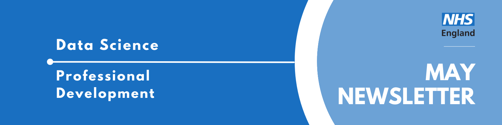
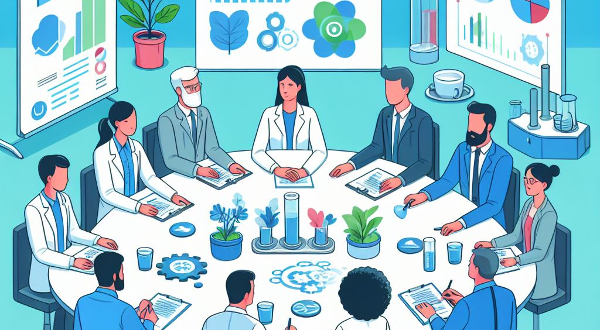

Professional Development Newsletter May 2024

Welcome to the latest Professional Development newsletter, brought to you by the Data Science skilled team Professional Development Functional Team.
The newsletter team are always happy to receive constructive feedback, and we invite you to send us any contributions you may have.
There are some legacy NHS Digital items which we have identified with❗
If you cannot access something of interest to you, please reach out.
Thanks for reading! – PD newsletter team
Events
Lots of exciting things coming up! We are working on revamping the calendar and hope to have something out soon!
Analysis without Data
Tuesday 21st May, 12-1pm, Online
This session outlines work by the Ministry of Justice (MoJ)’s Better Outcomes through Linked Data (BOLD) programme Homelessness Pilot colleagues in Department for Levelling Up, Housing and Communities (DLUHC). The Better Outcomes through Linked Data programme aims to demonstrate the benefits of linked data across government. In DLUHC’s Homelessness Pilot Team, our challenge was a lack of full data access for sensitivity reasons. To overcome this, we developed a Reproducible Analytical Pipeline (RAP) for our offending and repeat homelessness projects. For the rough sleeping and drug treatment project, we took a pragmatic approach to writing a report using only aggregated data that was suppressed.
We shall talk about our approaches, including constructing dummy data, modular coding using Quarto (an alternative to RMarkdown) and robust statistical methods such as trimmed means.
Using Data Science and AI to transform delivery in the prison system
Wednesday 29th May, 2-3pm, Online
Join colleagues from the Ministry of Justice (MoJ) who work alongside other government departments and agencies to bring the principles of justice to life for everyone in society. “We are one of the largest departments with a large proportion of staff working directly to the public and tens of thousands of prison staff making decisions every day about prisoners in their care. In the Prison Data Science team, we aim to support operational decision-making by developing and deploying innovative data science tools.
In this session, we will show examples of how we’ve used data science and AI to transform processes within prison services”
Innovation in analysis with Professor Sir Ian Diamond
Thursday 30th May, 2:30-3:30pm, Online
Join us to reflect on the innovative topics raised throughout a fantastic AiG Month and consider the importance of innovations to government analysis and where you can get support - no matter which profession or department you work in!
Join this session with, Professor Sir Ian Diamond - Head of the Analysis Function and National Statistician - to hear about the innovations that have caught his eye, and what he thinks are the most interesting and important innovations coming down the road.
Dark Data - Data Ethics and Society Reading Group
Tuesday 4th June, 1-2pm, Online (Teams)
Join the Public Sector Data Ethics & Society Reading Group to discuss David Hand’s book ‘Dark Data’. Sign up now to reserve your spot (and receive details of the 40% discount off the paperback we’ve scooped😎).
London Data Week 2024
1st-7th July 2024, Online and in person
London Data Week is a city-wide, distributed festival of events focusing on all things data. Data is a major part of our everyday lives, and shapes many of the decisions we make – as well as the decisions that are made about us – whether we know it or not. We believe that everyone should have a seat at the table when it comes to data, and that is the guiding principle behind our core values: to be collaborative, open and inclusive. So, we invite you to be part of the conversation by joining us and our event partners at a London Data Week event.
Find out more about London Data Week and what events are being held here
NHS RPySOC 2024 Conference (21st Nov, Birmingham) - registration opened
Thursday 21st-22nd November, 9am-5pm, in-person (Birmingham) / Online
The NHS RPySOC 2024 conference is open for registration now! It will be on 21st & 22nd November in Birmingham. This is jointed hosted by the NHS R Community and NHS.pycom, and also promotes Open Source.
- Day 1 will be a mixture of presentations, workshops and lightening talks
- Day 2 (in-person only) will be ‘Unconference’ with suggestions for topics being taken on day 1.
It’s a great chance to show off our work, share our learning with a like minded community and learn a few things yourself, such as the state of the industry and how techniques are being applied elsewhere.
You can either attend:
Abstract submissions haven’t been opened yet.
Know of any events we should feature next month? Let us know by clicking the “Contribute” button, or here.
Data Science Community
AI Quality Community of Practice

The AI Quality Community of Practice was launched on Thursday 16th May, a community primarily of testing and assurance professionals focused on the assurance of healthcare AI.
Data Science’s Will Poulett and Ben Wallace gave presentations on research they’d been doing in the AiQCoP, (formally INSTANT) including work on an academic paper which will be presented in IEEE in Athens at the end of the month.
AIQCOP will be closely collaborating with data science in the future, but the best way to get involved right now is to sign up to the Viva Engage group and send any papers or articles their way! You can also check out the sharepoint website or email them at nhsdigital.instant@nhs.net.
RAP Community of Practice
The RAP Community of Practice promotes good coding practice and aims to support analytical teams by developing learning materials, however it’s not a solo effort! Many RAP Champions have worked with the team in recent years and the current RAP Squad wants to encourage everyone to contribute to the Community, whether it be by sending a Pull Request, raising an Issue, or even emailing them!
Help make the RAP Community of Practice a community endeavour!
Training Opportunities
The Turing Online Learning Platform
The Turing Online Learning Platform offers a range of free online course from AI fairness on social media to an introduction to transparent machine learning. Check them all out here.
Microsoft Enterprise Skills Initiative
Using your nhs.net email account, you have access to a variety of Microsoft courses for free, as well as certifications. These range from a beginner friendly course titled Deploy and consume models with Azure Machine Learning to an advanced course titled Write advanced Transact-SQL queries.
We are currently updating our resource list and reviewing the content: please let us know of any resources you think would be useful! Check out all the resources in the Training Brochure! Can you spot something missing? Contact us!